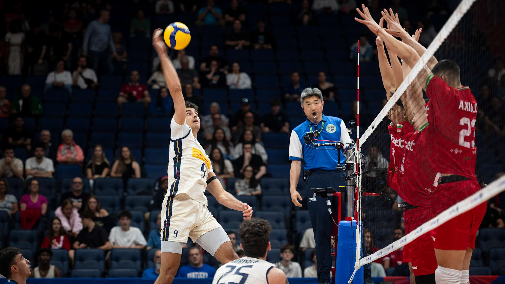

Sports Talk: Volleyball Edition
September 25, 2025 by Melissa S. Grant

If I say Italy losing to Belgium in the group stage is exactly why they might win gold, you might call me crazy,
but hear me out! That unexpected loss seemed to light a fire under the team. Since then, they've played with a new level of
focus, energy and teamwork that's been absolutely unstoppable. Every match in the playoffs has shown how hungry and
determined they are for a repeat. Honestly, it feels like they're peaking at the perfect time.
On the flip side, Bulgaria's young squad has been the biggest surprise of the tournament. They've been taking down some tough teams with
fierce intensity and high level plays. It's crazy to see the Nikolov brothers go toe-to-toe with these veteran teams and
come out on top. That quarter finals match versus USA was insane and epic. This finals is gonna be electric, a crazy showdown with these two teams.
Italy's comeback fire versus Bulgaria's youthful intensity. I really love an underdog story, but my gut is saying Italy in 5.
Entry 250: Frozen Circle
September 27, 2025 by Melissa S. Grant

I started this week with a purpose, early mornings, be more attentive and tackling all my assignments ahead of time.
Monday went great. Tuesday...kind of fell apart. By Wednesday, I was back in the familiar loop of falling behind,
distracted and a little disappointed in myself. It's funny how quickly things can unravel, even when you anticipate the
fallback and try to plan around it. Instead of tryig to force my way back into productivity mode, I decided to go for a walk.
It wasn't some mindblowing epiphany, just a simple 20 minutes outside, no phone, no list, just breathing and moving. It gave me
space to stop spiralling, pause and reset. That one walk reminded me to take one step at a time and try not to overcompensate for
things that I can't control. Just stay focused and present in the moment. Going forward, I now know that in the midst of chaos,
I have at least one thing I can rely on that I enjoy, that helps to clear my mind.